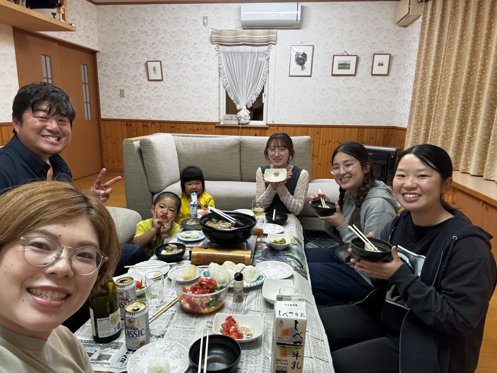
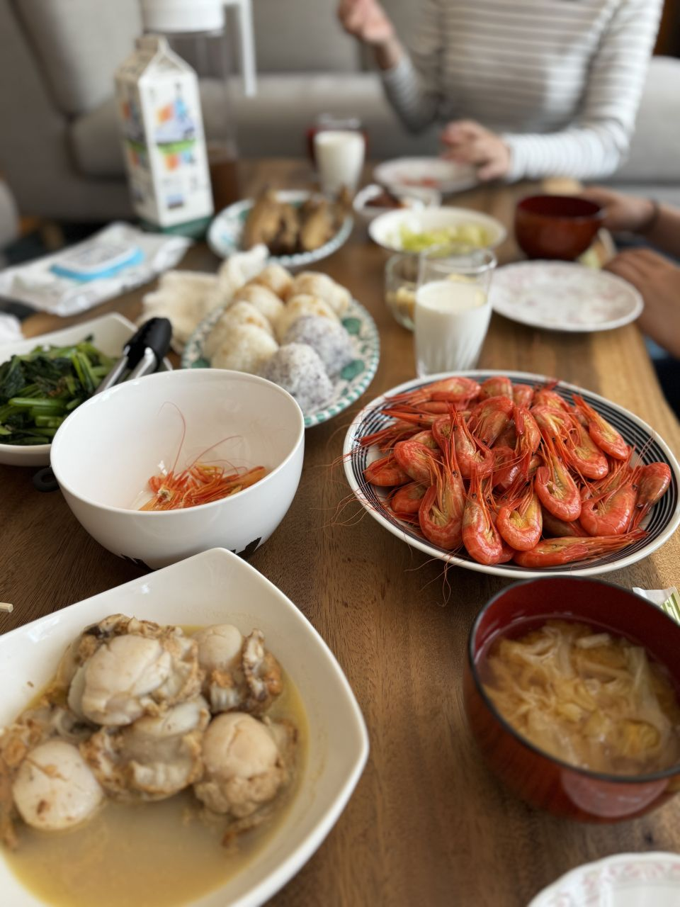
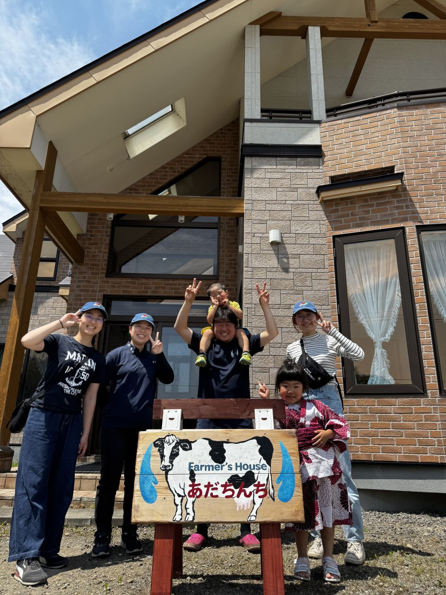
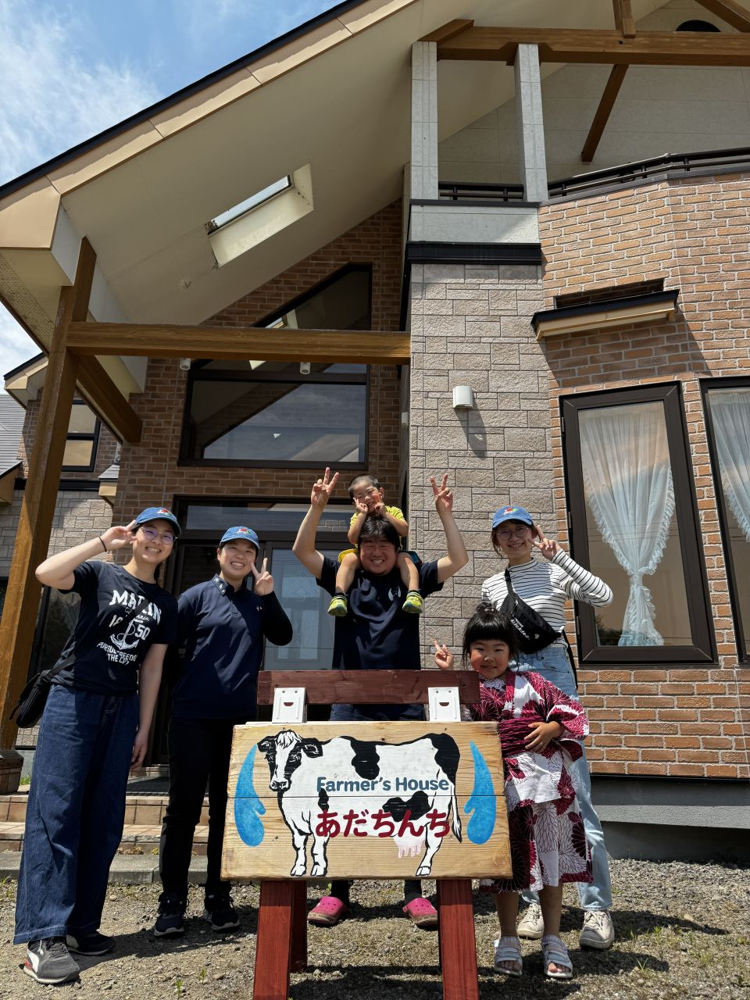

1日目 18:30~ 懇親会
今夜は宴だ。
標津を丸ごと食べ尽くせ！
- 鮭のちゃんちゃん焼き
- アサードもあるらしいぞ！？
- 楽しむしかない！！


2日目 4:00~ 暁の秘湯探検隊
酪農家の朝は早い。我々、探検隊の朝も早い。森に囲まれた砂利道を抜けると...そこには温泉が！眠気も吹き飛ぶ素敵な温泉、一緒に探しに行きませんか？
9:00~ 新規就農計画を立ててみよう
旧笹木牧場は牛舎内の傷みの少なさや清潔さから、これまでとても丁寧に、そして大切に使われてきたことが伺えます。効率的な給餌システム、牛舎と牧草地の移動など、日々の作業が無駄なくスムーズに行えるよう作業の導線が確立されていました。
あなたならどんな就農計画をたてますか？


3日目 9:00~ 第三部開始「放牧視察」
寺村牧場は、就農5年目の新しい牧場です。
- 現在44頭の牛を飼っており、MUN（牛乳中の尿素窒素）などで栄養状態もチェックし、健康管理にも力を入れています。
- ゲノム情報を活用した繁殖管理など、未来を見据えた取り組みにも挑戦中です！
 
